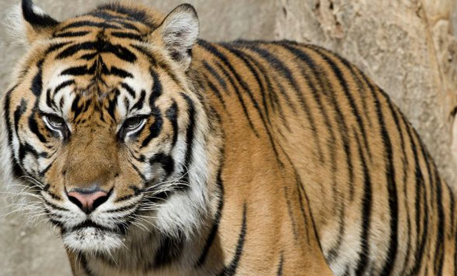
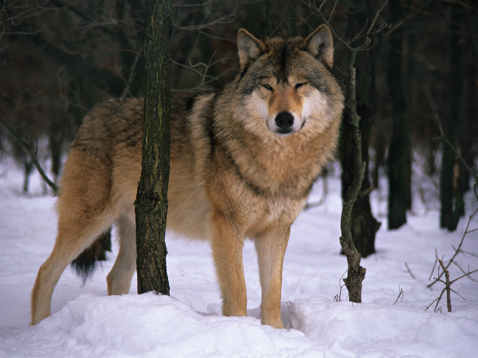
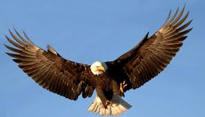
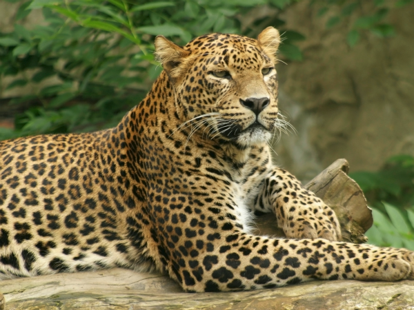

|  |
tigre |
El tigre es una de las cuatro especies de la subfamilia de los panterinos pertenecientes al género Panthera. |
anchor text |
 |
zebras |
característica más distintiva es su coloración a base de rayas blancas sobre un fondo negro. |
cebra |
|  |
lobo |
El lobo es una especie de mamífero placentario del orden de los carnívoros. |
lobo |
 |
jaguar |
es un carnívoro félido de la subfamilia de los Panterinos y género Panthera. |
jaguar |
|  |
aguila |
Son miembros de las aves de presa, del orden de Accipitriformes |
aguila |
|  |
leopardo |
El leopardo es un mamífero carnívoro de la familia de los félidos. |
leopardo |